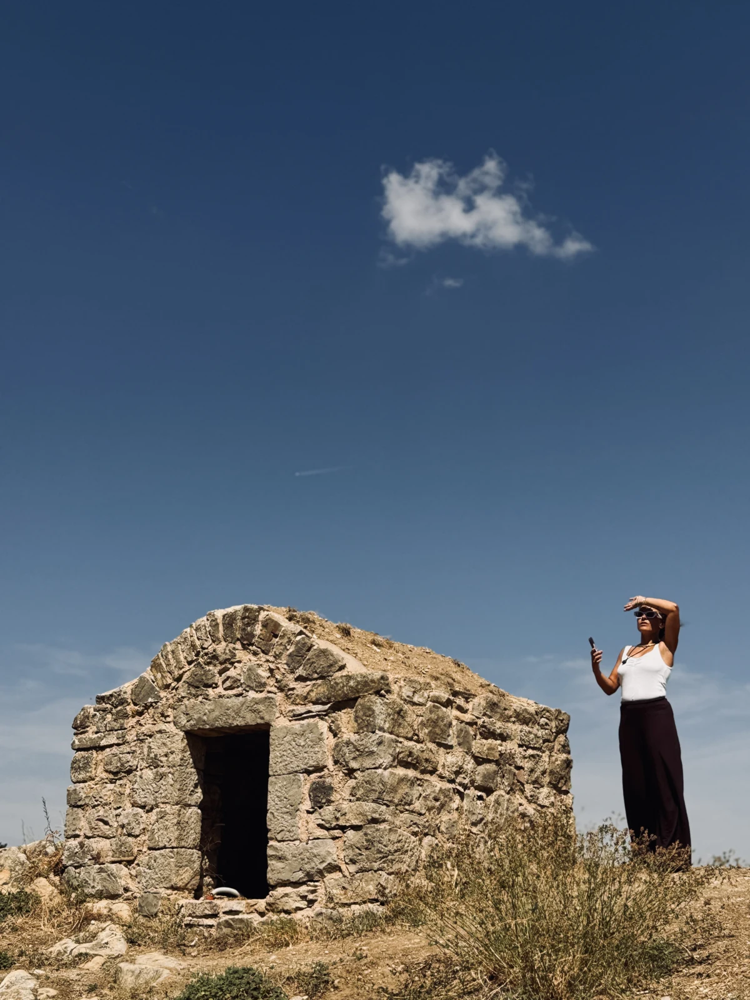

LINES FORME e PUNTO, two-person exhibition — Molise
Two-person exhibition featuring Valentina Colaneri and Angela Di Tomaso.
Drawing becomes light.
Explore the work
At the heart of Angela Di Tomaso’s artistic practice is a profound need to explore human experience in its most intimate and social dimensions: identity, memory, vulnerability and the complex relationships between individuals, communities and the surrounding world.
Working across drawing, light, installation and experimental cinema, she seeks to give form to what often eludes immediate representation.
The viewer is at the centre of the work: it is their gaze that completes its meaning. Contrasts are fundamental to the construction of her works: intimacy and exposure, stillness and movement, contemplation and rupture. Rhythm, repetition and silence become essential elements of a language in which the image extends beyond its surface into space, engaging the senses and inviting the viewer to become part of the experience.
Rooted in a deep interest in symbolism, natural forms and the expressive possibilities of technology, her practice moves between meditative exploration and social critique.
Trained at the Academies of Fine Arts in Frosinone and Brera in Milan, Angela Di Tomaso developed much of her artistic career in London.
InstagramSelected festivals, exhibitions and performances, 2011–2024.
Two-person exhibition featuring Valentina Colaneri and Angela Di Tomaso.
Live visuals by Angela Di Tomaso (Ai Di Ti) for the Tantrum stage.
Selection of INNOCENTI — Dust in the City, curated by Tommaso Evangelista, directed by Luca Basilico; presented online from 15 December 2021 to 19 January 2022.
Art installation and video mapping in collaboration with DeMí, visuals by Angela Di Tomaso; Eclectic Lounge event.
Video selection: “INNOCENTI - Dust in the City”.
Art video installation created with DeMí.
Live visuals by Ai Di Ti for RED NOISE, an electroacoustic performance by Gabriele Marangoni.
Live audio/video by Ai Di Ti.
Video art programme curated by Tommaso Evangelista.
Selection of “MI MODULE 01” for an exhibition exploring art, technology and place, with a public contribution to the programme.
Selection of “REALITY” in the Animation category (FILE Anima+).
Immersive audio/video installation “Concerto per Labirinto”, created in collaboration with Massimiliano Cestari.
Immersive audio/video installation “Concerto per Labirinto”. 14 September; collateral event during the Biennale season.
Live audio/video by Ai Di Ti Vision with Chromatouch, Resident Advisor.
Laser Painting, a live performance with Daniele Urgo (DONE).
“ERRORapp”, an audiovisual performance with Jacopo Di Crescenzo.
Development of “Lack of Communication” within the Interactive & Digital Art session; public presentation of the projects at Villa Tittoni Traversi, Desio, on 17 March 2012.
“MétaRéalisme”, an audiovisual installation on three synchronised screens, exploring symbolism and the relationship between inner experience and perceived reality. Created for the 2011 ERSEP exhibition.
Drawings, moving image
and live performance.
Choose a drawing and request a print directly from Angie. Prints are available in postcard or A4 size. Original drawings have individual dimensions; contact Angela for details. She will confirm price and shipping before you pay.
It grows in the dark,
loves the unknown
and flies into the light.
Artwork inquiries, collaborations
& commissions.